Open mouse-only menus
Reach the links inside a menu using the keyboard.
Chrome extension
Focus About on Mass.edu and Tab skips The DHE. Curb Cut opens the menu so your keyboard can reach the link.
chrome://extensions.Reach the links inside a menu using the keyboard.
Hear what each control does with a screen reader.
Read low-contrast text against its background.
Munich Airport · Screen reader

Reading view identifies a button, but gives no clue what it does.
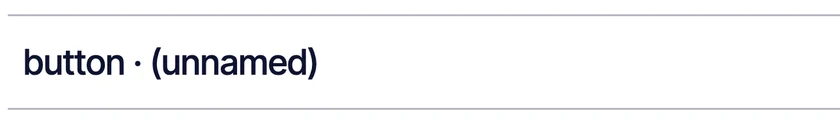
Its accessible name now says “previous slide” in German.
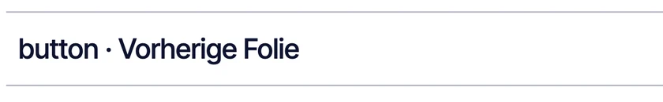
ExtremeTerrain · Low vision
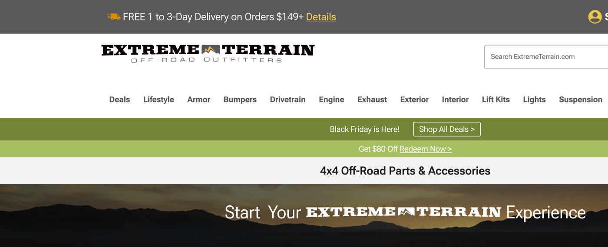
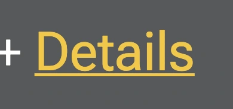
Measured link contrast. Normal-size text needs 4.5:1.
Measured link contrast. Normal-size text needs 4.5:1.
When you visit a site, the extension checks its bundled fixes for one that matches the page and the control.
Curb Cut changes the control in your browser. Open the toolbar popup to see the fix or turn it off.
See the recorded task or the local measurement behind a fix. Compare Kane’s three Mass.edu recordings.
Jev · Optional live naming
Even without a bundled fix, Jev can name buttons in about a second. When it’s unsure, it leaves the control alone.
A reviewer found 13 of 15 names correct. Two were too vague.
Read the naming review ↗Search and menu. Jev named both buttons in Spanish.
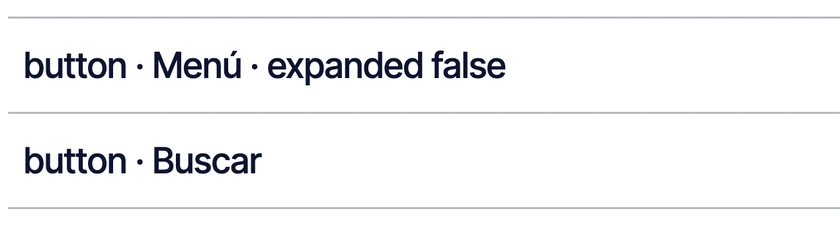
On woah.org, the logo link stayed unnamed after the check.
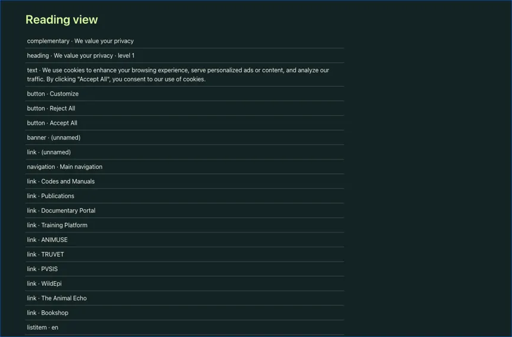
Proof / Keyboard navigation
Tab skipped the View menu on a site Curb Cut had never patched. A shortcut opened a report draft. Grok wrote a fix 16 seconds after the local Playwright check.
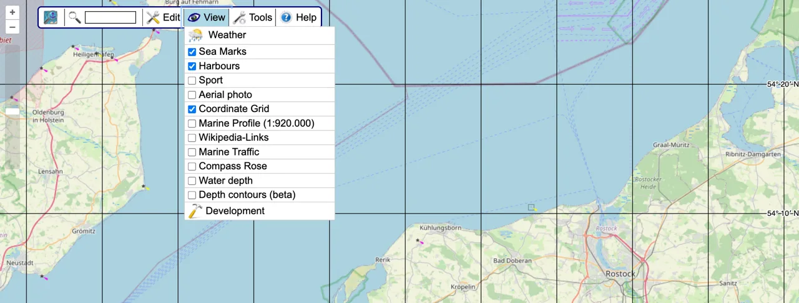
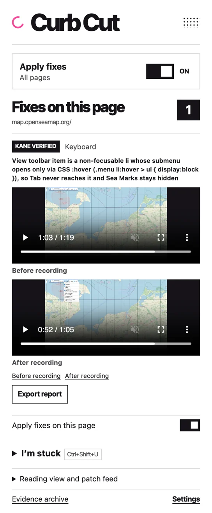
The AI tester tried the same menu three ways. Select a check to play its recording.
Kane passed the repaired run. Curb Cut initially marked it inconclusive, then confirmed the event order in the same trace and published the fix.
Read the full proofFor site owners
The extension helps one browser at a time. Share its report with the site owner so they can repair the control in the original page.
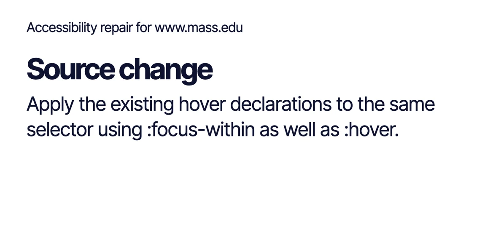
Kane repeats the task with the browser repair switched off. At the Stillroom test shop, adding headphones to the cart passed, so the patch retired.
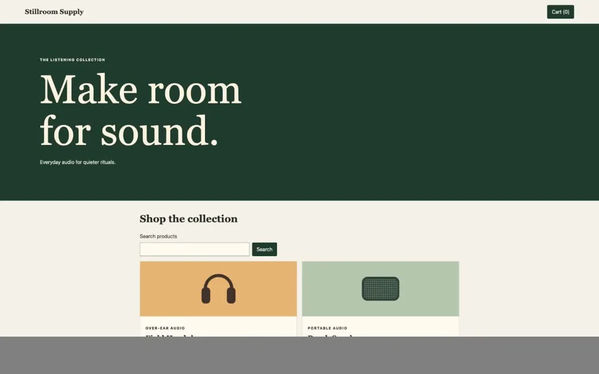
Play recordingRetirement record ↗Developer tools
Run the same accessibility check while you build, before a coding agent stops, or on a pull request.
Point the command at a page and describe what a person needs to do. In this terminal capture, Kane tests adding headphones to a cart.
curbcut check <url> "<task>"Open the run log ↗The keyboard missed Add to cart. The mouse reached it. After the repair, the keyboard reached it too. Kane passed the task. A later publishing step failed while archiving the evidence.
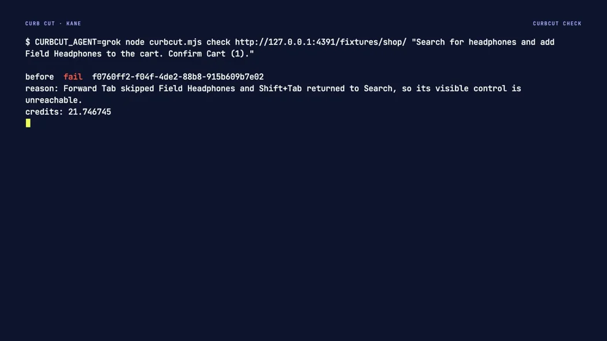
Play recordingA Claude Code Stop hook runs the task again. A failed check gives the agent the blocked step so it can repair the source.
curbcut gate --local --config curbcut.gate.jsonSet up the Stop hook ↗Tab skipped Add to cart. After the site changed the control to a native button, the same task passed with no failures.
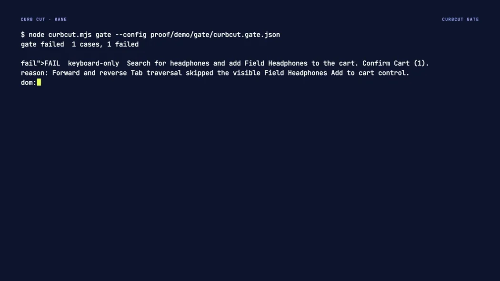
Play recordingThe opt-in PR bot waits for the preview site, runs the same gate in CI and updates a pull request comment with each task’s result.
Set up the PR bot ↗Search all 106 fixes. 62 have Kane recordings and 44 have local browser measurements. Open a row to inspect the task and its evidence. How to read a Kane badge.
| Site | Barrier | Browsing method | Proof |
|---|---|---|---|
| Keyboard menu | Keyboard only | Kane | |
Open “About” from keyboard focus or with Arrow Down and follow “The DHE”. Confirm the public destination /about/aboutdhe.asp. Browsing method · Keyboard only | |||
| Keyboard menu | Keyboard only | Kane | |
Use Tab to focus the View menu in the map toolbar. Verify the Sea Marks layer checkbox appears while View has focus. Leave the checkbox unchanged. Browsing method · Keyboard only after Recording · map.openseamap.org · after recording · Evidence pack · Original trace: inconclusive · Local check: pass | |||
| Low contrast text | Low contrast sensitivity | Local | |
Read the selected passage at WCAG AA contrast. Browsing method · Low contrast sensitivity | |||
| Low contrast text | Low contrast sensitivity | Local | |
Read the selected passage at WCAG AA contrast. Browsing method · Low contrast sensitivity | |||
| Missing image alternatives | Screen reader view | Kane | |
In Reading view, find the img identified by “ABC7 Eyewitness News” and choose its row to report it. If no row conveys that name, report that the task failed. Browsing method · Screen reader view | |||
No matching fixes.
Desktop Chrome
chrome://extensions and enable Developer mode.Yes. Open Curb Cut in the Chrome toolbar. You can pause fixes on the current page or switch off Apply fixes for all pages.
Choose “I’m stuck” in the popup or press Ctrl+Shift+U to describe the barrier. Review the page address, focused control and recent keys before saving the report. A developer can run curbcut serve locally to receive it.
Bundled repairs run in the extension. Live button naming with Jev is optional and can be enabled separately.
The entry has Kane recordings for the original task, mouse control and repaired task. Curb Cut evaluates each trace. ASME, the U.S. Department of Labor and Discuz also rely on local browser checks. Their original baselines were inconclusive, and Curb Cut marked Discuz’s mouse control as failed. OpenSeaMap’s repaired run passed on a recheck of the saved trace.
Inspect the study verdicts ↗